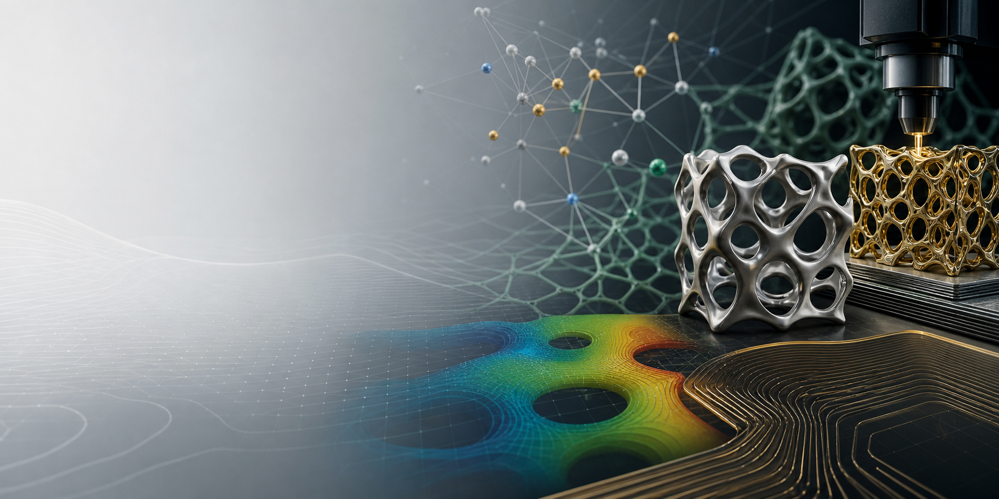

The AIM³ Lab website is live. We are recruiting fully funded Ph.D. students for 2026/2027 admission.

AI for Manufacturing, Materials, and Mechanical Systems Lab · Oakland University
AIM³ Lab
We build AI-enabled, experimentally grounded design methods for advanced manufacturing, materials discovery, and mechanical systems that can be fabricated reliably at scale.
Lab Vision
Autonomous design intelligence for manufacturing and materials
The AIM³ Lab develops machine learning, computational design, uncertainty quantification, and manufacturing science methods that help researchers discover, analyze, and robustly produce next-generation materials and mechanical systems.
- Principal investigator
- Zihan Wang, Assistant Professor
- Useful links
- Oakland University Mechanical Engineering Department
Latest
News
The ARCO-BO paper on collaborative Bayesian optimization for heterogeneous multi-agent design appears in the Journal of Mechanical Design.
Zihan Wang received the ASME Design Automation Dissertation Award and was selected for the MIT Rising Stars in Mechanical Engineering workshop.
Explore
Lab pages
01
Research
Autonomous discovery, generative co-design, and uncertainty-aware manufacturing.
02News
Recent lab announcements, publications, awards, and opportunities.
03People
Meet the principal investigator and future AIM³ Lab team members.
04Publications
Journal papers, preprints, conference proceedings, and invited talks.
05Teaching
Teaching, mentorship, and professional service by the lab PI.
06Join & Contact
Explore opportunities and get in touch with the AIM³ Lab at Oakland University.